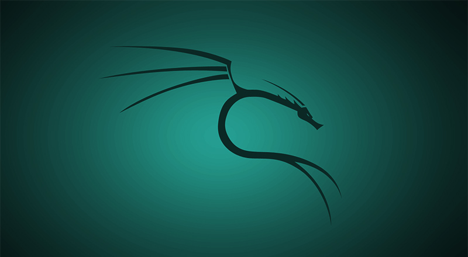

La Historia de Kali Linux:

Kali Linux es una de las distribuciones de Linux más reconocidas en el ámbito de la ciberseguridad y pruebas de penetración. Su historia está profundamente entrelazada con la evolución de las herramientas de hacking ético y la comunidad de seguridad informática. Antes de Kali Linux, existía otra distribución llamada BackTrack . Esta distribución fue creada en 2006 por los equipos de Offensive Security y Remote Exploit , y estaba basada en Knoppix y más tarde en Ubuntu . El de BackTrack era proporcionar una lista de plataformas para usar con herramientas preinstaladas para realizar pruebas de penetración, análisis forense digital y auditoría de seguridad. BackTrack ganó popularidad rápidamente en la comunidad de seguridad, ya que facilitaba a los profesionales y entusiastas de la seguridad el acceso a una amplia variedad de herramientas, sin tener que preocuparse por instalarlas y configurarlas desde cero.

El nacimiento de Kali Linux (2013) Para 2013, los desarrolladores de BackTrack decidieron que la base del sistema necesitaba una renovación. Aunque BackTrack había sido muy útil, tenía limitaciones en cuanto a su infraestructura y actualizaciones. Por lo tanto, en lugar de seguir desarrollando BackTrack, el equipo de Offensive Security decidió crear algo nuevo, basado en Debian, lo que daría lugar a Kali Linux. Kali Linux fue lanzado oficialmente el 13 de marzo de 2013 y estaba diseñado específicamente para cumplir con las necesidades de los profesionales de seguridad informática. Kali tomó lo mejor de BackTrack, pero con mejoras significativas: Basado en Debian : Kali Linux adoptó Debian como base, lo que le dio una estructura sólida, un sistema de paquetes robusto y actualizaciones constantes. Debian es conocido por su estabilidad y seguridad, lo que lo convierte en una excelente base para una distribución centrada en la seguridad. Soporte continuo : A diferencia de BackTrack, Kali Linux ofrece actualizaciones continuas, lo que significa que los usuarios no tenían que esperar lanzamientos importantes para obtener mejoras y nuevas herramientas. Esto fue un gran paso adelante en términos de mantenimiento y escalabilidad. Mejor organización de las herramientas : Mientras que BackTrack tenía un enfoque más desorganizado con respecto a la organización de las herramientas, Kali Linux agrupó las herramientas de manera lógica, facilitando su uso para diferentes tipos de tareas como pruebas de penetración, análisis de vulnerabilidades, ingeniería. inversa, etcétera
Desarrollo continuo y expansiones Desde su lanzamiento, Kali Linux ha pasado por varias versiones y mejoras importantes, manteniéndose actualizado con nuevas herramientas y capacidades para enfrentar los desafíos emergentes en la ciberseguridad. Entre sus hitos importantes se incluyen: Kali Rolling Release (2016) : En 2016, Kali adoptó un modelo de lanzamiento continuo (rolling release), lo que permite a los usuarios recibir actualizaciones regulares sin tener que esperar nuevas versiones. Esto es clave en el campo de la seguridad, ya que las herramientas deben estar siempre actualizadas para enfrentarse a las amenazas más recientes. Compatibilidad con diversas plataformas : Con el tiempo, Kali ha ampliado su compatibilidad con una amplia variedad de plataformas. No solo está disponible para arquitecturas x86 y x64, sino también para ARM, lo que significa que Kali puede ejecutarse en dispositivos como Raspberry Pi, smartphones y otros equipos portátiles. Esto lo hace extremadamente versátil para diferentes situaciones de pruebas y auditorías. Soporte para entornos en la nube : Kali también ha evolucionado para ofrecer soporte en entornos de nube como AWS y Azure, lo que permite a los profesionales de seguridad desplegar rápidamente infraestructuras de prueba en servidores remotos. Kali NetHunter : Otra gran expansión fue el desarrollo de Kali NetHunter , una versión de Kali Linux optimizada para dispositivos móviles Android. Con NetHunter, los usuarios pueden convertir sus teléfonos en potentes plataformas de pruebas de penetración móviles.
Propósito y filosofía El equipo de Offensive Security , que también es conocido por ofrecer certificaciones de seguridad como el OSCP (Offensive Security Certified Professional) , ha mantenido un Kali Linux como una herramienta para el hacking ético y las pruebas de penetración , promoviendo el uso responsable de las herramientas. incluidos. El enfoque de Kali siempre ha sido proporcionar una plataforma que permita a los profesionales de seguridad identificar, probar y remediar vulnerabilidades de manera ética y legal. Esto ha llevado a que Kali Linux se convierta en un estándar para los profesionales de la ciberseguridad, utilizado tanto en auditorías de seguridad, como en formación y competencias de hacking.